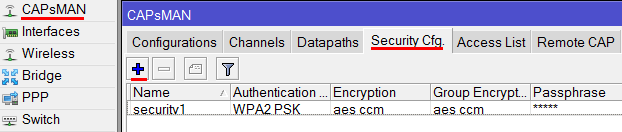
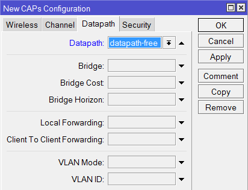
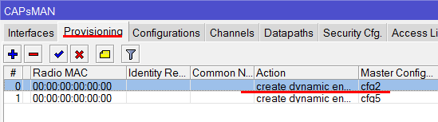
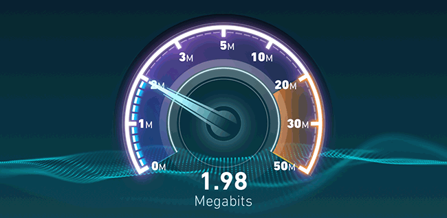

Настройка Wi-Fi роуминга в MikroTik CAPsMAN
05.08.2016
Wi-Fi роуминг позволяет клиенту перемещаться от одной Wi-Fi точки к другой без обрыва соединения. При этом потери передаваемых данных минимальны или вообще отсутствуют (бесшовный роуминг). В оборудовании MikroTik роуминг реализуется с помощью системы CAPsMAN.
Система CAPsMAN предназначена для централизованного управления несколькими Wi-Fi точками доступа MikroTik. С ее помощью можно настроить для Wi-Fi точек одно имя сети, пароль для подключения и реализовать роуминг. После внесения изменений в настройки CAPsMAN, они автоматически применяются ко всем Wi-Fi точкам.
CAPsMAN настраивается на любом роутере MikroTik. Т.е. роутер выступает в роли контроллера, а Wi-Fi точки подключаются к нему и получают настройки. Поэтому вам не нужно дополнительно покупать аппаратный контроллер.
У каждого производителя Wi-Fi роуминг реализован по-своему. Поэтому нельзя организовать бесшовную сеть, используя Wi-Fi точки разных производителей.
Полноценный бесшовный роуминг с отсутствием потерь передаваемых данных есть только в очень дорогом оборудовании с применением аппаратных контроллеров. В дом, кафе или гостиницу такое оборудование могут позволить себе очень немногие.
В недорогих решениях, как у MikroTik, роуминг происходит с небольшими задержками и потерями данных. Например, при разговоре по Skype или Viber при переходе от точки к точке на 1-2 секунды может залагать звук. Если вы качаете файл с сайта, не поддерживающего докачку, то при переходе произойдет обрыв, и закачку придется выполнить заново. При просмотре видео с Youtube переключение будет незаметно, поскольку данные кэшируются. При серфинге в браузере переключение так же незаметно.
Еще бывают ситуации, когда клиентское устройство подключается к одной Wi-Fi точке и никак не хочет переключаться на другую, даже если стоять возле нее. В этом случае можно настроить принудительное сбрасывание клиента с точки в зависимости от уровня сигнала. Однако при таком сбросе, если вы разговариваете по Skype или Viber, произойдет завершение звонка и нужно будет перезвонить.
Поэтому для организаций, которым очень важно высокое качество VoIP телефонии c постоянным перемещением между Wi-Fi точками, роуминг от MikroTik не подойдет. Для больших складов, по территории которых активно перемещаются с Wi-Fi терминалами сбора данных (сканерами штрих-кода), роуминг от MikroTik я тоже не рекомендую.
Для домашнего использования, кафе или небольшой гостиницы, описанные недостатки роуминга MikroTik не существенны. Поэтому оборудование MikroTik позволит вам создать единую Wi-Fi сеть за небольшие деньги.
В этой статье мы расскажем, как на роутере MikroTik настроить систему CAPsMAN и подключить к ней Wi-Fi точки для организации роуминга.
На оборудовании MikroTik должна быть установлена операционная система RouterOS Level4 не ниже версии v6.23.
Если у вас старая версия RouterOS, обновите ее до последней. Как это сделать, описано в статье Как обновить MikroTik RouterOS.
Мы будем использовать двухдиапазонные устройства с поддержкой ac стандарта: роутер hAP ac и точку доступа wAP ac.
Перед настройкой, необходимо убедиться, что на всех устройствах используется пакет wireless-cm2.
Внимание! Начиная с RouterOS 6.37, пакет называется просто wireless.
Откройте меню System - Packages. В списке пакетов wireless-cm2 должен быть активным. Если он выделен серым цветом, а активен пакет wireless-fp или wireless-rep, тогда выберите wireless-cm2 и нажмите кнопку Enable. После этого перезагрузите устройство через меню System - Reboot.
Если у вас в списке вообще нет пакета wireless-cm2, тогда его нужно установить. Для этого скачайте с официального сайта Extra packages для вашего роутера и распакуйте архив. Далее в Winbox откройте меню Files и перетяните туда файл wireless-cm2. После копирования перезагрузите роутер и активируйте пакет wireless-cm2.
Настройка контроллера MikroTik CAPsMAN
Как настроить роутер MikroTik для раздачи интернета мы останавливаться не будем. Это подробно описано в статье Простая настройка MikroTik с помощью QuickSet. Переходим к настройке CAPsMAN.
Сначала активируем CAPsMAN:
Выполняем настройку Wi-Fi канала:
У нас двухдиапазонные устройства, поэтому аналогичным образом настраиваем Wi-Fi канал для частоты 5ГГц. Если ваши устройства поддерживают только 2,4ГГц, то пропустите данный шаг.
В итоге получаем два канала: channel2 и channel5.
Настраиваем пароль для подключения к Wi-Fi сети:
Настраиваем режим обработки данных Datapaths:
Создаем новую конфигурацию для частоты 2,4ГГц.
Перейдите на вкладку Channel и в списке Channel выберите наш канал на 2,4ГГц под названием channel2.

Перейдите на вкладку Datapath и выберите datapath1.
Перейдите на вкладку Security, укажите наш профиль безопасности security1 и нажмите кнопку OK.
По аналогии создайте новую конфигурацию для частоты 5ГГц. Если ваши устройства не поддерживают 5ГГц, то пропустите этот шаг.
В итоге получаем две конфигурации для 2,4 и 5ГГц.
Теперь необходимо настроить параметры развертывания Provisioning для частоты 2,4ГГц.
Добавьте второе правило развертывания для частоты 5ГГц.
Добавляем Wi-Fi интерфейсы роутера в контроллер
Наш роутер имеет встроенный Wi-Fi, поэтому его беспроводные интерфейсы необходимо добавить в контроллер CAPsMAN.
В поле CAPsMAN Addresses мы не указываем IP адрес контроллера, поскольку наш роутер и Wi-Fi точка физически находятся в одном сегменте сети и найдут контроллер по MAC адресу. Т.е. они будут работать на уровне Layer 2.
Если ваши устройства физически находятся в разных сегментах сети, то указывайте IP адрес контроллера и ничего не указывайте в поле Discovery Interfaces. Ваши устройства будут работать на уровне Layer 3.
После этого произойдет автоматическая настройка и запуск интерфейсов wlan1 на 2,4ГГц и wlan2 на 5ГГц.
В меню CAPsMAN на вкладке Interfaces автоматически создадутся два новых интерфейса cap1 и cap2.
Добавляем Wi-Fi точку в контроллер
Зайдите через программу Winbox в настройки Wi-Fi точки в меню Quick Set, выберите режим CAP и согласитесь с изменениями. После этого режим CAP автоматически поменяется на Ethernet - это нормально.

Если программа Winbox не находит вашу Wi-Fi точку, тогда подключитесь ноутбуком или смартфоном к устройству по Wi-Fi. После этого введите в браузере адрес 192.168.88.1, и вы попадете в Web-интерфейс настройки точки доступа. Откройте меню Quick Set, выберите режим CAP и нажмите кнопку Apply Configuration. После этого Winbox должен увидеть устройство, и можно приступать к настройке.
Перед настройкой проверьте, что у точки доступа в меню System - Packages активирован пакет wireless-cm2 и версия RouterOS совпадает с версией, установленной на роутере.
Приступаем к настройке.
После этого Wi-Fi точка автоматически получит настройки и запустит интерфейсы wlan1 на 2,4ГГц и wlan2 на 5ГГц.
Теперь откройте настройки роутера, и перейдите в меню CAPsMAN на вкладку Interfaces. Здесь автоматически создались еще два новых интерфейса точки доступа cap3 и cap4.
Изменяем идентификатор роутера и точки доступа
Чтобы было удобно отслеживать, к какому устройству подключился клиент, переименуем их идентификаторы.
Подключитесь смартфоном или планшетом к Wi-Fi сети mikrotik2 на 2,4ГГц или mikrotik5 на 5ГГц.
В настройках роутера откройте меню CAPsMAN и перейдите на вкладку Registration Table. Здесь видно, что наш планшет подключился к интерфейсу cap2 на 5ГГц.
Чтобы понять, какому устройству принадлежит интерфейс cap2, перейдите на вкладку Radio и посмотрите. Здесь видно, что cap2 принадлежит роутеру router.
Далее возьмите планшет и перейдите с ним к Wi-Fi точке. Произойдет автоматическое переключение, и на вкладке Registration Table название интерфейса поменяется на сap4 - это интерфейс точки доступа ap1.
Если роутер и точка доступа находятся рядом, то переключение может не произойти. Нужно, чтобы они были достаточно удалены друг от друга. На открытом пространстве без преград расстояние между точками лучше делать около 35 метров, чтобы они не глушили друг друга. При наличии стен расстояние можно уменьшить.
На этом настройка роуминга MikroTik завершена. Далее мы рассмотрим частные способы расширенной настройки.
Настройка сбрасывания клиентов с плохим уровнем сигнала
Бывают ситуации, когда клиентское устройство подключается к одной Wi-Fi точке и никак не хочет переключаться на другую, даже если стоять возле нее. В этом случае можно настроить принудительное сбрасывание клиента с точки в зависимости от уровня сигнала. Однако при таком сбросе, если вы разговариваете по Skype или Viber, произойдет завершение звонка и нужно будет перезвонить. Я этой настройкой не пользуюсь, поскольку мне не нравятся такие обрывы связи. Но если вам это необходимо, то приступайте к настройке.
Если вы предоставляете в кафе или гостинице бесплатный доступ к Wi-Fi для гостей, то вам может потребоваться в целях безопасности разделить сеть организации и гостевую сеть. Иначе гости смогут получить доступ к вашим серверам, рабочим компьютерам или принтерам. Далее мы расскажем, как создать отдельную гостевую Wi-Fi сеть, изолировать ее, и ограничить скорость для посетителей.
Первым делом создадим бридж интерфейс, который будет использоваться для Wi-Fi сети с бесплатным доступом к интернету.
Настроим IP адресацию новой сети. Она должна отличаться от адресации основной сети. По умолчанию сеть роутера MikroTik имеет IP адреса 192.168.88.1 - 192.168.88.254. Поэтому мы решили создать новую сеть с адресным пространством 192.168.1.1 - 192.168.1.254.

Настраиваем DHCP Server, который будет автоматически назначать IP адреса клиентам.
В появившемся окне выберите интерфейс bridge-free и нажмите кнопку Next.
Ничего не меняем, жмем Next.
Опять Next.
Снова Next.
Предпоследний Next.
И последний Next.
Готово. Жмем OK.
Теперь необходимо настроить CAPsMAN, чтобы он создал на устройствах виртуальные Wi-Fi интерфейсы.
Откройте меню CAPsMAN, перейдите на вкладку Security Cfg. и нажмите синий плюсик.

Здесь мы указываем параметры безопасности сети. Поскольку наша сеть будет без пароля, достаточно указать имя профиля безопасности security-free и нажать кнопку OK.
Перейдите на вкладку Datapaths и нажмите синий плюсик. Укажите имя datapath-free и выберите бридж интерфейс bridge-free. Нажмите кнопку OK. Параметр local forwarding мы не указываем, чтобы гостевые устройства не общались друг с другом в сети.
Перейдите на вкладку Configurations и нажмите синий плюсик, чтобы создать новую конфигурацию открытой сети.
Сначала создадим конфигурацию для частоты 2,4ГГц.
Перейдите на вкладку Channel и в списке Channel выберите наш канал на 2,4ГГц под названием channel2.
Перейдите на вкладку Datapath и выберите datapath-free.
Перейдите на вкладку Security, укажите наш профиль безопасности security-free и нажмите кнопку OK.
По аналогии добавьте новую конфигурацию для частоты 5ГГц. Если ваши устройства не поддерживают 5ГГц, то пропустите этот шаг.

В итоге список всех конфигураций выглядит так.
Теперь добавим созданные конфигурации cfg2free и cfg5free в параметры развертывания Provisioning. Перейдите на вкладку Provisioning и откройте настройки развертывания для частоты 2,4Ггц.

В списке Slave Configuration укажите конфигурацию cfg2free и нажмите кнопку OK.
Теперь откройте настройки развертывания для частоты 5Ггц. В списке Slave Configuration укажите конфигурацию cfg5free и нажмите кнопку OK.
Далее необходимо обновить настройки наших точек. Перейдите на вкладку Remote CAP, выделите все устройства с помощью клавиши Shift на клавиатуре, и нажмите кнопку Provision.
Теперь откройте меню Wireless и на вкладке Interfaces вы увидите, что на роутере под основными Wi-Fi интерфейсами создались виртуальные интерфейсы, которые будут использоваться для подключения к открытой сети без пароля. Такие же интерфейсы создались и на нашей точке Wap.
В меню CAPsMAN на вкладке Interfaces также видно новые виртуальные интерфейсы. Они находятся под основными.
Запрещаем клиентам гостевой сети доступ к сети администрации
Запретим клиентам доступ из одной сети в другую.
Этим правилом мы запретили доступ из гостевой подсети 192.168.1.0/24 в административную подсеть 192.168.88.0/24.
Теперь добавим еще одно правило, чтобы запретить доступ из административной подсети 192.168.88.0/24 в гостевую подсеть 192.168.1.0/24, т.е наоборот.

Ограничиваем скорость в гостевой Wi-Fi сети
Чтобы гости не заняли весь канал интернета, и сотрудникам организации было комфортно работать, необходимо настроить ограничения скорости для каждого клиента гостевой сети.
Допустим у нас есть входной интернет канал 100 Мбит/с. Для внутренней сети кафе достаточно минимальной скорости 20 Мбит/с. Остальные 80 Мбит/с мы выделим для гостевой сети. Каждому гостю сделаем ограничение скорости в 2 Мбит/с.
Перед настройкой необходимо убедиться, что на роутере в фаерволе отключен fasttrack. Эта технология появилась начиная с RouterOS 6.29 и позволяет увеличить производительность путем пересылки данных без их дополнительной обработки. Однако если она включена, то ограничения скорости не сработают. Обычно это проявляется так: скорость загрузки не срабатывает, а скорость отдачи работает. Поэтому fasttrack необходимо отключить, либо применить для подсети, в которой не будут действовать ограничения скорости.
Но мы не будем его деактивировать, а применим для внутренней сети администрации 192.168.88.0/24, в которой не будут действовать ограничения.
Теперь приступаем к настройке ограничений скорости для гостевой подсети 192.168.1.0/24.
Добавим pcq очередь на загрузку с ограничением 2 Мбит/с.
Добавим pcq очередь на отдачу с ограничением 2 Мбит/с.
Теперь добавим правило с ограничениями скоростей.
Теперь подключитесь к открытой Wi-Fi сети mikrotik2free или mikrotik5free, и проверьте скорость с помощью сайта www.speedtest.net или аналогичного мобильного приложения.

Показываем рекламу в гостевой Wi-Fi сети
Если вы хотите, чтобы гостей при подключении к открытой сети перебрасывало на рекламную страничку, необходимо настроить хот-спот. О настройке хот-спота читайте в статье Настройка HotSpot на Wi-Fi роутере MikroTik. Настройку начинайте с раздела 4. Настройка MikroTik HotSpot. В качестве интерфейса для хотспота Hotspot Inerface: укажите bridge-free - интерфейс нашей открытой сети и продолжайте настройку по статье.